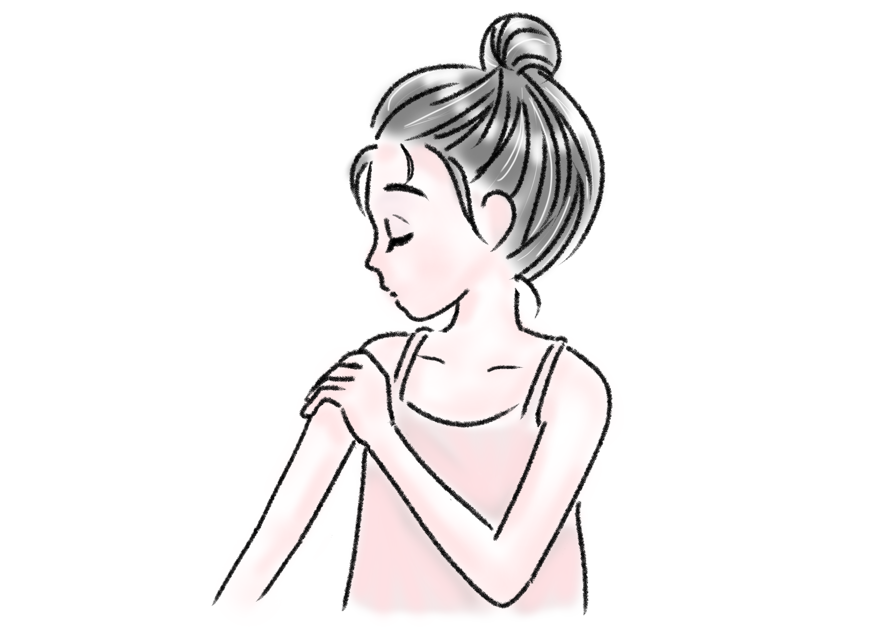

40代からの美しさは、
自信がある眉毛から。
自分へのご褒美に、
美しい眉を手に入れませんか？
医療アートメイク
- 眉の黄金比に
基づいた施術 - 仕事終わりに
22時まで営業！ - LINEで24H
質問受付可能！

モニターキャンペーン開催中!!
2023年5月31日までに
ご予約の方限定
￥10,000
OFF
クーボンコード：
IDO-000003
申込時にこのクーポン番号を入力してください。
WORRIES
眉のこんなお悩みありませんか？
-
 眉メイクが苦手
眉メイクが苦手 -
自分に合う
眉デザインが
わからない -
 すっぴんに
すっぴんに
自身が持てない… -
温泉やプールが
おっくう…
医療アートメイクなら…
-
 朝メイクの
朝メイクの
時短に -
 メイク直しが
メイク直しが
簡単に！ -
 すっぴんに
すっぴんに
自身！ -
汗をかいても
落ちない
ABOUT ART MAKE
3D眉アートメイク
Technique
-
 現代の技法は昔のように海苔を貼ったような仕上がりにはならず、メイクで描いたような仕上がりになります。
現代の技法は昔のように海苔を貼ったような仕上がりにはならず、メイクで描いたような仕上がりになります。 -
値段は少々高めだが、眉毛を一本一本丁寧に描いていく今主流の毛並み眉。まるで本物の眉毛を再現できます。
-
 3D+パウダー技法
3D+パウダー技法
毛並みのみよりメイク感も出て、より白眉毛と馴染んだ仕上がりになります。

3D眉アートメイクとは？
人により、自眉の濃さや毛量は様々。
3D眉アートメイクは、一本一本丁寧に自眉を活かしながら施術を行うアートメイクの基本となる施術方法です。
どれが本当の眉で、どれがアートメイク眉かわからないほど自然な仕上がりが特徴です。
3D眉アートメイクは、一本一本丁寧に自眉を活かしながら施術を行うアートメイクの基本となる施術方法です。
どれが本当の眉で、どれがアートメイク眉かわからないほど自然な仕上がりが特徴です。
医療アートメイクってどんなもの？
専用の針を用い、色素を注入してメイクを施す技法を医療アートメイクといいます。
医師による事前診断を受け、その指示のもと美容看護師が施術を行います。
medical salon μ では医療機関であるM&Mクリニックと提供し、医療アートメイクを提供しています。
医師による事前診断を受け、その指示のもと美容看護師が施術を行います。
medical salon μ では医療機関であるM&Mクリニックと提供し、医療アートメイクを提供しています。